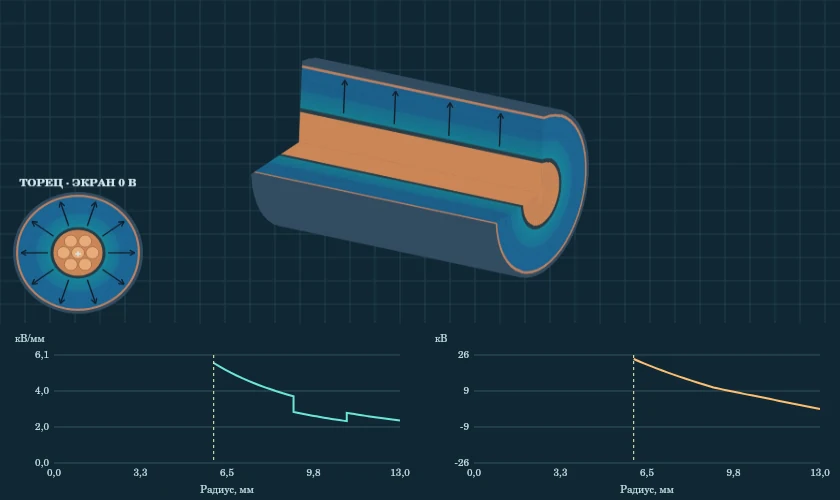
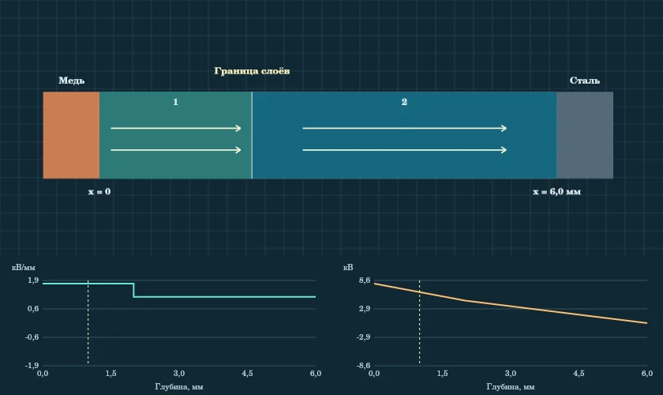
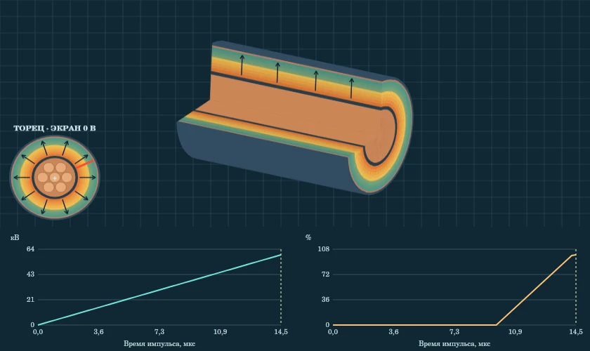
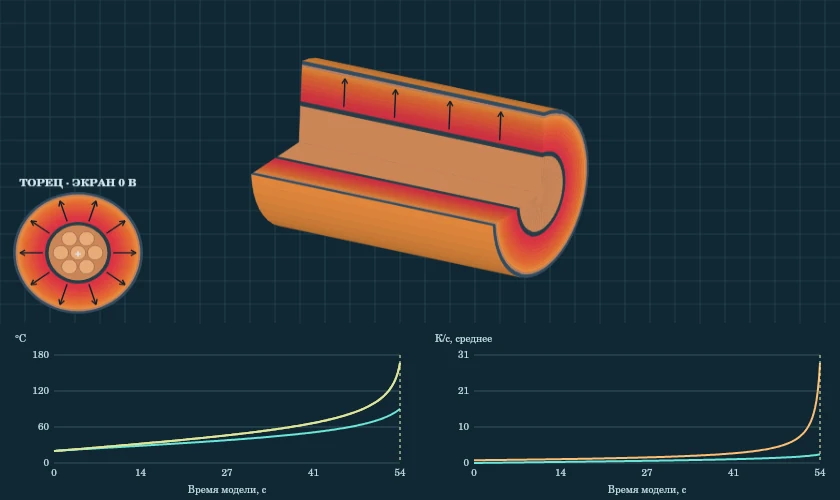
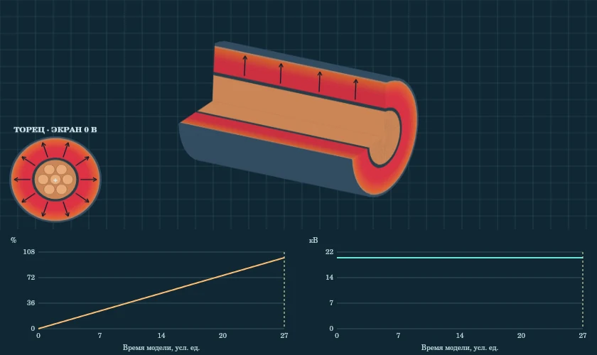

Тема 8. Механизмы пробоя твёрдых диэлектриков
Конспект студента
Как читать стенд и различать механизмы
Представим два одинаковых кабеля. Первый отключился сразу после импульсного перенапряжения. Во втором перед отказом долго росла температура. Оба образца могут иметь проводящий след, но этот след сам по себе не объясняет, что вызвало отказ. Чтобы различать механизмы, надо восстановить условия, ход процесса и признаки, которые появились до пробоя.
| Механизм | Условия, на которые смотрим | Что изучаем в тренажёре |
|---|---|---|
| Электрический | Поле, геометрия, амплитуда и длительность импульса | Импульс U(t), максимум поля и долю пройденной толщины |
| Тепловой | Потери, температура, внешняя среда и теплоотвод | Температуры у жилы и снаружи, баланс выделения и отвода |
| При длительном воздействии | Время, предыстория изоляции, среда и дефекты | Сравнение условных кривых повреждения |
В реальном объекте механизмы могут сочетаться. Например, ранее повреждённая изоляция может разрушиться при импульсе, который выдержал бы новый кабель. В лабораторном сравнении сначала меняют один фактор, фиксируя остальные, чтобы связать результат с этим изменением.
Маршрут по вкладкам
Начните с «Обзора». Затем рассмотрите геометрию в «Кабель · 2–3 слоя» и «Слои в пазу двигателя». После этого проведите опыты «Электрический пробой», «Тепловой пробой» и «Длительное воздействие». Вкладки «Задачи», «Кейсы», «Тест» и «Формулы» помогают проверить расчёт, аргументацию и пределы применимости модели.
Управление опытом находится над рисунком. «Пуск» запускает процесс или один замедленный период поля. «Пауза» останавливает запись. Ползунок времени в динамических опытах возвращает к выбранному кадру. Щуп ставится нажатием. Для расчётов поля удобнее выбрать точку на торце кабеля или на увеличенной стенке паза. Смена ракурса не изменяет расчёт. Для сравнения временных опытов сохраните первую кривую.
Обозначения
U — разность потенциалов, φ — потенциал относительно заземлённого экрана или стали, E — напряжённость поля, D — электрическая индукция, εᵣ — относительная диэлектрическая проницаемость. Напряжение указывайте в кВ, расстояния в мм, E в кВ/мм. Частоту указывайте в Гц, длительность импульса в мкс. При тепловом расчёте различайте U действующее и U мгновенное. Для синусоиды положительный пик равен √2·Uдейств.
Вопрос. Почему равенство знаков двух показаний не доказывает равенства их модулей? Объясните это сначала для потенциала и поля, затем для двух слоёв с разными εᵣ.
Кабель с двумя и тремя слоями
На торце найдите медную жилу, полупроводящий экран жилы, диэлектрические слои, заземлённый металлический экран и наружную оболочку. Нулевой потенциал задан металлическому экрану. Оболочка за экраном не входит в расчёт основного поля. На стенде СПЭ означает сшитый полиэтилен, ЭПР — этиленпропиленовую резину, ПЭ — полиэтилен. Принятые сочетания слоёв и εᵣ служат учебному сравнению.
От геометрии к формулам
В длинном коаксиальном кабеле вдали от торцов радиальная составляющая D при отсутствии объёмного заряда убывает как 1/r. В слое i связь Eᵣᵢ = Dᵣ/(ε₀εᵣᵢ) приводит к формуле Eᵣᵢ(r) = U/(Sᵣ εᵣᵢ r), где Sᵣ = Σ[ln(bᵢ/aᵢ)/εᵣᵢ]. aᵢ и bᵢ — радиусы границ слоя. Безразмерная величина Sᵣ получается, когда падения напряжения на слоях складываются. Вклад полного слоя равен ΔUᵢ = U·ln(bᵢ/aᵢ)/(Sᵣεᵣᵢ).
Для однородной изоляции Eᵣ = U/[r ln(b/a)], а φ(r) = U ln(b/r)/ln(b/a). В многослойной изоляции φ в точке равен сумме падения напряжения от точки до конца её слоя и падений на всех наружных слоях. На границе без свободного поверхностного заряда Dᵣ непрерывна. Поэтому изменение εᵣ меняет E, а φ остаётся непрерывным. Внутри каждого слоя максимум |E| находится у его внутреннего радиуса. Чтобы найти максимум по всей изоляции, сравните эти значения между слоями.
Пример. При U = 24 кВ, радиусах 6, 9 и 11 мм и εᵣ = 2,3 и 3,0 получаем Sᵣ ≈ 0,2432. Тогда E у жилы ≈ 7,15 кВ/мм. На переходе 9 мм поле меняется примерно с 4,77 до 3,66 кВ/мм. Потенциал с обеих сторон стремится к одному значению, около 6,60 кВ.

Как прочитать график
На левом графике |E| показан без знака. Направление читается по стрелкам и показанию щупа. На правом графике φ имеет знак. При заданном положительном пике фаза 90° показывает поле от жилы к экрану. В 180° обе кривые обнуляются. В 270° направление поля и знак φ меняются, а |E| возвращается к тому же профилю. На границе щуп ставят чуть левее и чуть правее, чтобы не смешивать значения разных материалов.
Шесть опытов для самостоятельной работы
- Точки у границ. Установите два слоя и 24 кВ. Щупом проверьте E у жилы и у экрана. Запишите: Два значения E и радиусы.
- Граница материалов. Щупом снимите E по обе стороны границы СПЭ–ЭПР. Запишите: Два значения E, почему φ остаётся непрерывным.
- Добавление ПЭ. Включите три слоя. Запишите: Внешний радиус, изменение E у жилы.
- Толщина СПЭ. При двух слоях увеличьте СПЭ с 3 до 6 мм. Запишите: E у жилы и внешний радиус.
- Двойное напряжение. Верните два слоя, задайте 12 кВ и затем 24 кВ. Запишите: Во сколько раз меняется E при том же радиусе.
- Смена знака. Поменяйте +24 кВ на −24 кВ. Запишите: Стрелки, знак φ и модуль E.
Два слоя в пазу двигателя
Откройте общий поперечный разрез. Медные проводники удерживаются пазовым клином. Сталь паза принята за нулевой потенциал. Кнопка «Увеличение стенки» показывает небольшой плоский участок между медью и сталью. В этой геометрии глубина x отсчитывается от меди. Щуп сохраняет глубину при переходе от общего вида к увеличенному.
Расчёт плоского участка
Для идеальных слоёв без свободного заряда на границе D₁ = D₂, поэтому εᵣ₁E₁ = εᵣ₂E₂. Из суммы U = E₁d₁ + E₂d₂ находим S = d₁/εᵣ₁ + d₂/εᵣ₂, Eᵢ = U/(εᵣᵢS) и ΔUᵢ = Eᵢdᵢ. Внутри каждого слоя E постоянно. Потенциал убывает или растёт линейно в зависимости от знака U. Чем больше модуль E, тем круче график φ(x).
Пример. d₁ = 2 мм, d₂ = 4 мм, εᵣ₁ = 4, εᵣ₂ = 6, U = +8 кВ. S = 7/6 мм. Тогда E₁ ≈ 1,71 кВ/мм, E₂ ≈ 1,14 кВ/мм. Падения составляют около 3,43 и 4,57 кВ. Потенциал на границе равен 4,57 кВ. Подстановка x = 6 мм даёт φ = 0 на стали.
Что отличается от кабеля. В плоском пакете поле внутри слоя горизонтально на графике. В кабеле оно изменяется с радиусом, даже если εᵣ постоянна. В пазу тренажёр рассчитывает только плоское окно. Углы, поры, межвитковое поле, форма фронта ШИМ и нагрев двигателя требуют других моделей.

Шесть опытов для самостоятельной работы
- Исходный пакет. Выберите исходный пакет. Снимите показания щупа в обоих слоях. Запишите: E₁, E₂ и какой слой нагружен сильнее.
- Перестановка εᵣ. Нажмите «Поменять εᵣ местами», толщины оставьте прежними. Запишите: Как поменялось соотношение E₁ и E₂.
- Изменение толщины. В исходном пакете удвойте толщину первого слоя. Запишите: Падение напряжения в первом слое до и после.
- Удвоение U. При исходной геометрии сравните 8 и 16 кВ. Запишите: Во сколько раз меняются оба поля.
- Одинаковые материалы. Задайте обоим слоям εᵣ = 4. Запишите: Вид графика E и падения напряжения на слоях.
- Обратный пик. Задайте −8 кВ, проверьте стрелки. Запишите: Знаки E и φ, сумма падений по глубине.
Электрический пробой при импульсе
Электрический механизм связывают с быстрым ростом проводимости при сильном поле. Для анализа полезно сопоставить величину напряжения, форму импульса, геометрию и время до появления канала. Снижение температуры или сокращение импульса не заменяет сравнения поля в конкретной изоляции.
Что именно вычисляет стенд
Импульс на стенде треугольный. После «Пуск» параметры фиксируются до окончания записи. В каждом кадре рассчитывается Eᵣ по формуле коаксиального кабеля. Условный канал начинается, когда максимальный |E| достигает 12 кВ/мм, и может продолжать расти при |E| ≥ 7 кВ/мм. Если поле упало ниже этого значения, канал дальше не растёт. Доля канала относится к учебной анимации, пороги не являются паспортными параметрами.
В предустановке «Ниже порога» пик 24 кВ даёт расчётный максимум около 7,15 кВ/мм. Начала канала нет. При том же пакете 72 кВ соответствует расчётному максимуму около 21,45 кВ/мм на заданном пике. Но при замыкании запись прекращается, поэтому наблюдавшийся максимум может оказаться ниже расчётного значения для пика. Для сравнения импульсов 35 и 5 мкс проверяйте прежде всего долю канала в последнем кадре.

Слева читайте напряжение и время в мкс. Справа — долю толщины, пройденную каналом. Смена знака U меняет направление стрелок. В симметричном критерии этого стенда при равных модулях результат одинаков. Это свойство модели, которое не описывает все возможные реальные полярностные эффекты.
Шесть опытов для самостоятельной работы
- Слабый импульс. Запустите предустановку «Ниже порога». Запишите: Пиковое |E| и исход.
- Сильный импульс. Запустите «Выше порога», откройте продольный вырез. Запишите: Первый кадр канала и исход.
- Короткий импульс. Оставьте 72 кВ, уменьшите длительность до 5 мкс. Запишите: Длину канала в конце и отличие от опыта 2.
- Толще изоляция. При 72 кВ и 35 мкс увеличьте СПЭ с 3 до 8 мм. Запишите: Пиковое |E| и исход.
- Обратная полярность. Повторите опыт 2 при −72 кВ. Запишите: Направление стрелок в кадре и сравнение |E|.
- Третий слой. При настройках опыта 2 добавьте 2 мм ПЭ. Запишите: Изменение |E| и исход.
Тепловой пробой и тепловой баланс
В изоляции при воздействии напряжения могут возникать потери. Пока выделяемое тепло отводится, температура способна выйти на устойчивый уровень. Если при росте температуры потери возрастают быстрее, чем теплоотдача, нагрев может ускориться. Чтобы различить обычный прогрев и тепловой разгон, сравнивают форму кривой температуры и баланс, а не только одно высокое показание.
Как устроена учебная модель
Температура задаётся в кольцевых объёмах. У каждого есть внутренний источник и перенос тепла к соседним кольцам. Обмен со средой задан на наружной границе, у жилы тепловой поток через границу принят равным нулю. Начальная температура — 20 °C. В сравнении при одинаковой температуре Qист ∝ f·Uдейств². Множитель источника в модели дополнительно растёт с температурой. При фиксированных f и T переход от 22 кВ к 18 кВ даёт отношение начальных источников (18/22)² ≈ 0,67. На графике средние вклады приведены к скорости изменения температуры в К/с.
Отрицательная теплоотдача означает приток тепла из среды. Проверьте это при U = 0 и температуре среды 80 °C. Наружное кольцо нагревается раньше внутреннего. При внутреннем источнике и хорошем охлаждении картина иная: отвод действует на наружной границе, поэтому внутренние кольца могут быть горячее. Температуру жилы и наружной оболочки отдельно стенд не решает.

Условия сравнения: 22 кВ, 100 Гц и среда 20 °C. При хорошем отводе температура выходит на плато, при слабом растёт до остановки у учебной границы 165 °C. Сравните кривые при одинаковом времени. Отдельно отметьте время остановки. Переключатель полупериода изменяет показ мгновенного направления поля, а тепловой расчёт использует действующее напряжение.
Шесть опытов для самостоятельной работы
- Хороший отвод. Выберите «Хороший теплоотвод», запустите опыт. Запишите: T у жилы и на внешней границе к концу опыта.
- Слабый отвод. Сохраните кривую. Выберите «Слабый теплоотвод», запустите. Запишите: Время достижения учебной границы.
- Нагрев снаружи. Сбросьте, задайте U = 0 и температуру среды 80 °C. Запишите: Где T растёт первой и какой знак у теплоотдачи.
- Роль напряжения. Вернитесь к хорошему отводу, задайте 18 кВ вместо 22 кВ. Запишите: T у жилы на 20-й секунде, сравнение с опытом 1.
- Роль частоты. При хорошем отводе и 22 кВ задайте 200 Гц. Запишите: Отношение начальных тепловыделений к опыту 1.
- Переменное поле. Поставьте опыт на паузу. Переключите положительный пик, отрицательный пик и ноль. Запишите: Направление E, цвет и температуру при одном кадре.
Длительное воздействие и накопление повреждений
Разрушение при длительном воздействии связано с изменениями, которые не исчезают сразу после снятия напряжения. В зависимости от конструкции и материала существенными могут быть химические процессы, частичные разряды, микроповреждения и внешняя среда. Для сравнения образцов важно знать не только текущее поле, но и предшествующую нагрузку, состояние оболочки и условия эксплуатации.
Как читать результат
В модели влажность — безразмерная настройка в процентах. Повреждение тоже выражено в процентах, но это другая шкала. Сухой и увлажнённый режимы сравнивают при одинаковых 20 кВ. Сначала сохраните кривую сухого образца, затем наложите влажный режим. На графике найдите первое достижение одинакового уровня, например 50%. Сравнивать времена можно только внутри этой модели. Переводить их в часы или годы службы нельзя.
Проверьте влияние напряжения отдельно. При прочих равных при уменьшении U с 20 до 10 кВ модель даёт в четыре раза меньший начальный наклон, поскольку приращение пропорционально U². При U = 0 показатель повреждения перестаёт расти. Условная окраска по радиусу нужна для чтения щупа и не показывает измеренное распределение влаги или химических продуктов.

Если в реальной диагностике найдено отличие двух кабелей, проверьте, действительно ли они сравнимы по конструкции, возрасту, нагрузке и истории среды. Признак состояния сам по себе не выделяет один механизм разрушения.
Шесть опытов для самостоятельной работы
- Сухой образец. Выберите «Сухой», запустите опыт. Запишите: Время достижения 50% по графику.
- Влажный образец. Сохраните кривую, выберите «Увлажнённый» и повторите. Запишите: Время достижения 50% и сравнение с опытом 1.
- Влияние U. Увлажнённый образец: снизьте U с 20 до 10 кВ. Запишите: Как изменился начальный наклон.
- Нулевое напряжение. Увлажнённый образец: установите U = 0. Запишите: Показатель на 20-й единице времени.
- Неравномерность. В одном кадре опыта 2 измерьте значение у жилы и у экрана. Запишите: Два показания и что задано условной картой.
- Промежуточная влажность. При 20 кВ задайте 40% влажности. Запишите: Сравнение времени до 50% с опытами 1 и 2.
Расчётные задачи и инженерные кейсы
Во вкладке «Задачи» сначала укажите модель геометрии, выпишите данные, определите единицы, затем подставьте числа. Проверка ответа принимает точку и запятую. Кнопка «Показать решение» раскрывает ход расчёта. Для самостоятельной работы сначала запишите свою попытку.
- Поле в плоском образце. На пластину толщиной 3 мм подали пик 36 кВ. Найдите E, кВ/мм.
- Поле у жилы. Однородный кабель: a = 6 мм, b = 12 мм, U = 24 кВ. Найдите E(a), кВ/мм.
- Потенциал в изоляции кабеля. Для a = 5 мм, b = 20 мм, U = 30 кВ найдите φ при r = 10 мм, кВ.
- Два слоя в пазу. d₁ = 2 мм, εᵣ₁ = 4, d₂ = 4 мм, εᵣ₂ = 6, U = 8 кВ. Найдите E₁, кВ/мм.
- Частота и потери. При неизменных T, U и параметрах модели частоту подняли со 100 до 250 Гц. Во сколько раз выросло начальное тепловыделение?
- Действующее и пиковое. Каков положительный пик синусоидального напряжения при Uдейств = 12 кВ? Ответ в кВ.
Как разбирать кейс
В «Кейсах» даны пять учебных ситуаций. Для каждой составьте короткую запись из четырёх частей: наблюдение, основная гипотеза, конкурирующее объяснение и данные, которые различат эти гипотезы. Затем откройте «Сравнить с решением».
- Двигатель после перевода на ПЧ. После перевода на ПЧ выросла температура обмотки. После отказа найдено повреждение пазовой изоляции. Данных об охлаждении и осциллограмм на выводах нет. Назовите две гипотезы и измерения, которые их различают.
- Кабель в нагретом канале. При одинаковой нагрузке кабель в закрытом канале теплее такого же кабеля на открытом участке. Температура воздуха тоже выше. Как разделить влияние температуры среды и теплоотвода?
- Пробой после короткого перенапряжения. Защита отключила линию вскоре после импульсного события. До события контроль не показал повышения температуры. Какой опыт начнёте первым и какие данные ещё нужны?
- Два кабеля во влажном помещении. Один из двух однотипных кабелей долго работал во влажной среде. При диагностике выявлены отличия. Как проверить гипотезу длительной деградации, не смешивая возраст и влажность?
- Изменение пакета в пазу. Поставщик предложил заменить внутреннюю ленту материалом с меньшим εᵣ при тех же толщинах и напряжении. Что проверить в расчёте и чего не хватает для решения о замене?
Для зачёта практики приложите график или снимок со своими настройками и выводом. Если предложенное измерение показывает только общий факт отказа, уточните, как оно поможет отличить механизмы.
Тест, формулы и итог
Во вкладке «Тест» выберите назначенный вариант. Всего пять вариантов по 15 вопросов. В расчётных заданиях следите за радиусами, логарифмом, единицами и видом напряжения. В вопросах на понимание прежде всего определите, что показывает выбранный график или стрелка. После сдачи разберите пояснения, вернитесь к соответствующей вкладке и проверьте один ошибочный ответ наблюдением или расчётом.
Формулы для самопроверки
| Вопрос | Соотношение и условие |
|---|---|
| Однородное плоское поле | E = U/d вдали от краёв |
| Плоский многослойный пакет | S = Σ(dᵢ/εᵣᵢ), Eᵢ = U/(εᵣᵢS) |
| Длинный многослойный коаксиальный кабель | Sᵣ = Σ[ln(bᵢ/aᵢ)/εᵣᵢ], Eᵣᵢ = U/(εᵣᵢSᵣr) |
| Положительный пик синусоиды | Uпик = √2·Uдейств |
| Начальный источник тепла на стенде | Qист ∝ f·Uдейств² при одинаковой температуре |
| Контроль потенциала | φ = 0 на экране или стали. Сумма падений равна U |
Итоговые вопросы. Почему слой с меньшей εᵣ в плоском пакете испытывает большее поле? Почему на графике кабеля |E| одинаков в противоположных пиках? Что отличает внешнее нагревание от потерь внутри? Какие наблюдения поддерживают гипотезу длительной деградации и чего они ещё не доказывают?
Источники и материалы
- В. Ф. Важов, В. А. Лавринович. Техника высоких напряжений. ТПУ, 2014. § 1.2.2, рис. 1.38 и § 1.2.2.3.
- J. Stiles, University of Kansas. Electrostatic Fields of a Coaxial Line.
- IEC 60034-18-42:2017+A1:2020. Квалификация систем изоляции типа II для машин с питанием от преобразователей. Нормативный контекст кейса о двигателе.
- Тренажёр · Практикум · Чек-лист.